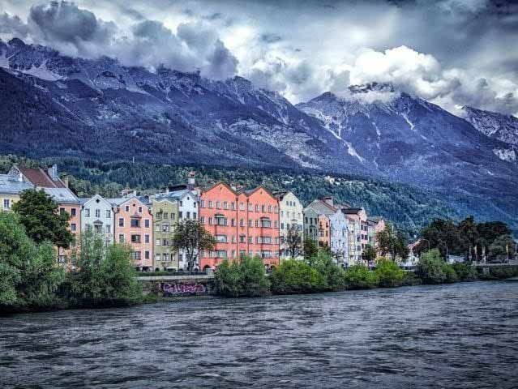
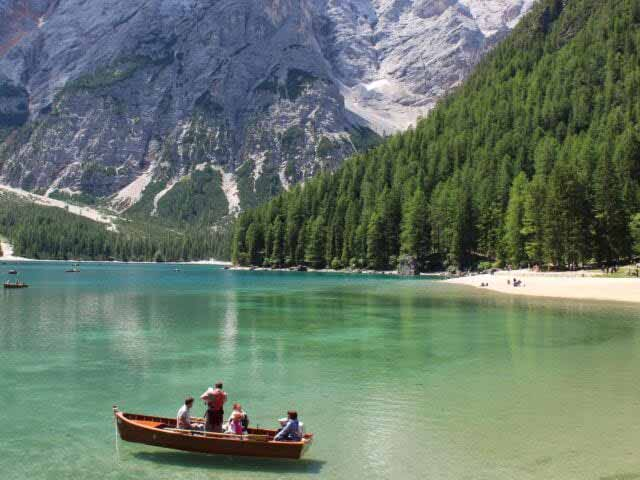
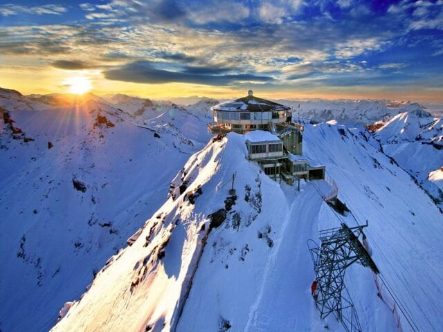
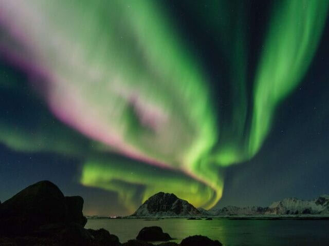

Oplevelsesferier
Aktive oplevelser
Vores oplevelsesrejser er for dem der gerne selv vil bestemme deres aktivitets niveau. I modsætning til skirejser, hvor du meget af tiden er aktiv, så kan du her opleve alt fra fra vinture i Sydtyrol til at vandre i de højeste steder i Europa. Du kan også tage på vandretur i Norge hvor du kan se nordlyset. Se vores destinationer og find den rejse du helst vil på.
Innsbrück i Tyrol
I det sydvestlige Østrig, ligger Tyrol’s 800 år gamle hovedstad, Innsbrück. Her kan du opleve de majestætiske alper og de blomstrende dale, som omkranser byen. Innsbrück er kendt for sine vintersportsgrene og de olympiske vinterlege har to gange været afholdt i byen. Fra Innsbrück er der rig mulighed for at komme ud i naturen. Der er flere smukke vandreruter fra byen, ligesom det også er muligt at tage kabelbanen op i bjergene på bare 10 minutter.
6 dage fra kr. 4.450,-
Bolzano i Sydtyrol
I folkemunde kaldes Bolzano også for ”porten til Dolomitterne” og med blot halvandens times kørsel fra Bolzano, kan I opleve denne særlige type klippe, som også kaldes ”de blege bjerge” pga. den specielle mineralske blanding, der giver klipperne et helt specielt lys, især ved solnedgang. I området omkring Bolzano, finder man små middelalderbyer, smuk natur og vandreruter i alle sværhedsgrader. I kan desuden tage på vintur samt smage på lokale delikatesser.
6 dage fra kr. 4.450,-
Alperne i Schweiz
Rejsen går til Interlaken i Schweiz, som er omgivet af nogle af de højeste alper, såsom Eiger, Mönch og Jungfrau. Tag toget til Europas højest beliggende jernbanestation, Jungfraujoch, også kaldet “Toppen af Europa”. Stationen ligger spektakulært placeret, mellem de to bjerge Jomfruen og Munken, i mere end 3400 meters højde. Der er to ruter op til toppen, enten via Grindelwald eller Lauterbrunnen, to fantastisk smukke steder som også anbefales!
6 dage fra kr. 4.950,-
Fantastiske Nordnorge
Norge er verdenskendt for nordlys og i Narvik er der god mulighed for at se det spektakulære naturfænomen. Der er mange muligheder for aktiviteter i området, såsom skiløb, udflugt til Lofoten, eller en tur med gondolbanen til toppen af Narvikfjeldet og nyde udsigten fra 1000 meters højde. I får oplevet den smukke strækning Ofotbanen, som klatrer sig op ad fjeldsiden med udsigt over fjordene og fjeldene. Oplev også den lokale dyrepark, Polar Park, og se nordens vilde dyr på tæt hold.
7 dage fra 4.950,-